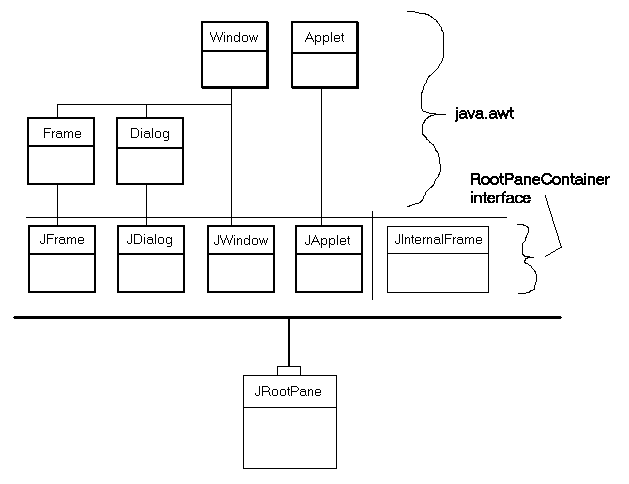
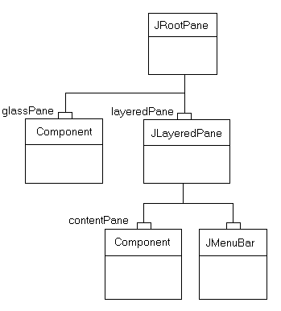

java.awt.Component
java.awt.Container
javax.swing.JComponent
javax.swing.JRootPane
java.awt.Component
java.awt.Container
javax.swing.JComponent
javax.swing.JRootPane
|
JavaTM 2 Platform Standard Ed. 6 |
|||||||||
| 上一个类 下一个类 | 框架 无框架 | |||||||||
| 摘要： 嵌套 | 字段 | 构造方法 | 方法 | 详细信息： 字段 | 构造方法 | 方法 | |||||||||
java.lang.Object
public class JRootPane
该轻量级容器由 JFrame、JDialog、JWindow、JApplet 和 JInternalFrame 在后台使用。有关根窗格所提供功能的面向任务的信息，请参阅 The Java Tutorial 中的 How to Use Root Panes 一节。
下面的图像显示了使用根窗格的各个类之间的关系。

“重量级”组件（指委托给主机系统上的同位体或本地组件的组件）用较暗的、更重的框来显示。四个重量级 JFC/Swing 容器（JFrame、JDialog、JWindow 和 JApplet）的显示与它们扩展的 AWT 类有关。这四个组件是 Swing 库中仅有的重量级容器。这里还显示了轻量级容器 JInternalFrame。所有这五个 JFC/Swing 容器都实现 RootPaneContainer 接口，并且它们都将其操作委托给 JRootPane（顶端显示有一个小 "handle"）。
注：使用JComponent的getRootPane方法可获取包含给定组件的JRootPane。
|  |
JRootPane 的结构。JRootpane 由一个 glassPane 和一个可选的 menuBar 以及一个 contentPane 组成。（JLayeredPane 负责管理 menuBar 和 contentPane。）glassPane 位于所有窗格之上，以便能够截取鼠标移动。由于 glassPane（与 contentPane 类似）可以是一个任意的组件，也可以设置 glassPane 来进行绘制。这样 glassPane 上的线条和图像可涵盖其下的窗体，不受其边界的限制。
尽管 menuBar 组件为可选，但 layeredPane、contentPane 和 glassPane 总是存在的。试图将它们设置为 null 将生成异常。
要将组件添加到 JRootPane（可选的菜单栏除外），您可以将对象添加到 JRootPane 的 contentPane，如下所示：
rootPane.getContentPane().add(child);
可用同样的方法设置布局管理器、移除组件以及列出子级等。所有这些方法都是在 contentPane 上而不是 JRootPane 上调用的。
注：如果已在contentPane的默认布局管理器是BorderLayout管理器。但是，JRootPane使用一个自定义的LayoutManager。所以，如果您希望更改已添加到JRootPane中的组件的布局管理器，一定要确保使用如下代码：rootPane.getContentPane().setLayout(new BoxLayout());
JRootPane 上设置了 JMenuBar 组件，它将沿窗体的上边缘放置。contentPane 的位置和大小将进行调整以填充剩余的区域。（JMenuBar 和 contentPane 被添加到位于 JLayeredPane.FRAME_CONTENT_LAYER 层的 layeredPane 组件中。)
layeredPane 是 JRootPane 中所有子级的父级，既是菜单的直接父级，又是添加到 contentPane 中的所有组件的祖父级。它是 JLayeredPane 的实例，提供在若干层上添加组件的能力。在处理弹出菜单、对话框以及拖动时，即要求将组件置于窗格中所有其它组件之上的情况下，此功能非常有用。
glassPane 位于 JRootPane 中所有其它组件之上。这为在所有其它组件上绘图和截取鼠标事件提供了方便，这对拖动和绘图都非常有用。开发人员可在 glassPane 上使用 setVisible 控制 glassPane 在所有其它子级上面显示的时间。默认情况下，glassPane 为不可见。
JRootPane 所使用的自定义 LayoutManager 可确保：
glassPane 填充了 JRootPane 的整个可查看区域（边界 - insets）。
layeredPane 填充了 JRootPane 的整个可查看区域。（边界 - insets）
menuBar 位于 layeredPane 的上边缘。
contentPane 填充了整个可查看区域，减去 menuBar（如果有）。
JRootPane 视图层次结构中的任何其它视图均忽略。
如果您替换 JRootPane 的 LayoutManager，您将负责管理所有这些视图。所以通常情况下，应该确保更改的是 contentPane 的布局管理器，而不是 JRootPane 自身的布局管理器。
Swing 的绘制架构要求在所有其它组件之上的包含层次结构中有一个不透明的 JComponent。这通常通过使用内容窗格来实现。如果要替换内容窗格，建议使用 setOpaque(true) 将内容窗格设置为不透明。另外，如果内容窗格重写 paintComponent，还需要在 paintComponent 中用不透明颜色将背景完全填充。
警告：Swing 不是线程安全的。有关更多信息，请参阅 Swing's Threading Policy。
警告：此类的序列化对象与以后的 Swing 版本不兼容。当前序列化支持适用于短期存储，或适用于在运行相同 Swing 版本的应用程序之间进行 RMI（Remote Method Invocation，远程方法调用）。从 1.4 版本开始，已在 java.beans 包中添加了支持所有 JavaBeansTM 长期存储的功能。请参见 XMLEncoder。
JLayeredPane,
JMenuBar,
JWindow,
JFrame,
JDialog,
JApplet,
JInternalFrame,
JComponent,
BoxLayout,
Mixing Heavy and Light Components| 嵌套类摘要 | |
|---|---|
protected class |
JRootPane.AccessibleJRootPane
此类实现对 JRootPane 类的可访问性支持。 |
protected class |
JRootPane.RootLayout
该自定义布局管理器负责 layeredPane、glassPane 和 menuBar 的布局。 |
| 从类 javax.swing.JComponent 继承的嵌套类/接口 |
|---|
JComponent.AccessibleJComponent |
| 从类 java.awt.Container 继承的嵌套类/接口 |
|---|
Container.AccessibleAWTContainer |
| 从类 java.awt.Component 继承的嵌套类/接口 |
|---|
Component.AccessibleAWTComponent, Component.BaselineResizeBehavior, Component.BltBufferStrategy, Component.FlipBufferStrategy |
| 字段摘要 | |
|---|---|
static int |
COLOR_CHOOSER_DIALOG
供 windowDecorationStyle 属性使用的常量。 |
protected Container |
contentPane
内容窗格。 |
protected JButton |
defaultButton
当窗格成为焦点并有类似按下 Enter 键的特定于 UI 的操作发生时被激活的按钮。 |
protected javax.swing.JRootPane.DefaultAction |
defaultPressAction
已过时。 从 Java 2 platform v1.3 开始 |
protected javax.swing.JRootPane.DefaultAction |
defaultReleaseAction
已过时。 从 Java 2 platform v1.3 开始 |
static int |
ERROR_DIALOG
供 windowDecorationStyle 属性使用的常量。 |
static int |
FILE_CHOOSER_DIALOG
供 windowDecorationStyle 属性使用的常量。 |
static int |
FRAME
供 windowDecorationStyle 属性使用的常量。 |
protected Component |
glassPane
覆盖菜单栏和内容窗格的玻璃窗格，便于截取鼠标移动等操作。 |
static int |
INFORMATION_DIALOG
供 windowDecorationStyle 属性使用的常量。 |
protected JLayeredPane |
layeredPane
管理菜单栏和内容窗格的分层窗格。 |
protected JMenuBar |
menuBar
菜单栏。 |
static int |
NONE
供 windowDecorationStyle 属性使用的常量。 |
static int |
PLAIN_DIALOG
供 windowDecorationStyle 属性使用的常量。 |
static int |
QUESTION_DIALOG
供 windowDecorationStyle 属性使用的常量。 |
static int |
WARNING_DIALOG
供 windowDecorationStyle 属性使用的常量。 |
| 从类 javax.swing.JComponent 继承的字段 |
|---|
accessibleContext, listenerList, TOOL_TIP_TEXT_KEY, ui, UNDEFINED_CONDITION, WHEN_ANCESTOR_OF_FOCUSED_COMPONENT, WHEN_FOCUSED, WHEN_IN_FOCUSED_WINDOW |
| 从类 java.awt.Component 继承的字段 |
|---|
BOTTOM_ALIGNMENT, CENTER_ALIGNMENT, LEFT_ALIGNMENT, RIGHT_ALIGNMENT, TOP_ALIGNMENT |
| 从接口 java.awt.image.ImageObserver 继承的字段 |
|---|
ABORT, ALLBITS, ERROR, FRAMEBITS, HEIGHT, PROPERTIES, SOMEBITS, WIDTH |
| 构造方法摘要 | |
|---|---|
JRootPane()
创建 JRootPane，设置其 glassPane、layeredPane 以及 contentPane。 |
|
| 方法摘要 | |
|---|---|
protected void |
addImpl(Component comp,
Object constraints,
int index)
重写以便将玻璃组件的位置强行设置成零位子级。 |
void |
addNotify()
将本身注册为 SystemEventQueueUtils 的新的根窗格。 |
protected Container |
createContentPane()
由构造方法调用以便创建默认的 contentPane。 |
protected Component |
createGlassPane()
由构造方法调用以便创建默认的 glassPane。 |
protected JLayeredPane |
createLayeredPane()
由构造方法调用以便创建默认的 layeredPane。 |
protected LayoutManager |
createRootLayout()
由构造方法调用以便创建默认的 layoutManager。 |
AccessibleContext |
getAccessibleContext()
获取与此 JRootPane 相关联的 AccessibleContext。 |
Container |
getContentPane()
返回内容窗格，它是保存以根窗格为父级的组件的容器。 |
JButton |
getDefaultButton()
返回 defaultButton 属性的值。 |
Component |
getGlassPane()
返回此 JRootPane 的当前玻璃窗格。 |
JMenuBar |
getJMenuBar()
返回窗格层的菜单栏。 |
JLayeredPane |
getLayeredPane()
获取供根窗格使用的分层窗格。 |
JMenuBar |
getMenuBar()
已过时。 从 Swing 版本 1.0.3 开始，由 getJMenuBar() 取代。 |
RootPaneUI |
getUI()
返回呈现此组件的 L&F 对象。 |
String |
getUIClassID()
返回一个指定呈现此组件的 L&F 类名称的字符串。 |
int |
getWindowDecorationStyle()
返回一个常量，它标识 JRootPane 提供的 Window 装饰类型。 |
boolean |
isOptimizedDrawingEnabled()
glassPane 和 contentPane 具有相同的边界，这意味着 JRootPane 并不对其子级平铺，应返回 false。 |
boolean |
isValidateRoot()
如果此 JRootPane 的一个后代调用 revalidate，将从此位置开始进行验证。 |
protected String |
paramString()
返回此 JRootPane 的字符串表示形式。 |
void |
removeNotify()
将本身从 SystemEventQueueUtils 注销。 |
void |
setContentPane(Container content)
设置内容窗格，它是保存以根窗格为父级的组件的容器。 |
void |
setDefaultButton(JButton defaultButton)
设置 defaultButton 属性，它确定此 JRootPane 的当前默认按钮。 |
void |
setDoubleBuffered(boolean aFlag)
设置此组件是否应该使用缓冲区进行绘制。 |
void |
setGlassPane(Component glass)
将指定的 Component 设置为此根窗格的玻璃窗格。 |
void |
setJMenuBar(JMenuBar menu)
添加或更改在分层窗格中使用的菜单栏。 |
void |
setLayeredPane(JLayeredPane layered)
设置供根窗格使用的分层窗格。 |
void |
setMenuBar(JMenuBar menu)
已过时。 从 Swing 版本 1.0.3 开始，由 setJMenuBar(JMenuBar menu) 取代。 |
void |
setUI(RootPaneUI ui)
设置呈现此组件的 L&F 对象。 |
void |
setWindowDecorationStyle(int windowDecorationStyle)
设置 JRootPane 应提供的 Window 装饰类型（例如，边界、关闭 Window 的小部件、标题等）。 |
void |
updateUI()
将 UI 属性重置为当前外观对应的值。 |
| 从类 java.lang.Object 继承的方法 |
|---|
clone, equals, finalize, getClass, hashCode, notify, notifyAll, wait, wait, wait |
| 字段详细信息 |
|---|
public static final int NONE
JRootPane 不应提供任何类型的 Window 装饰。
public static final int FRAME
JRootPane 应提供适合 Frame 的装饰。
public static final int PLAIN_DIALOG
JRootPane 应提供适合 Dialog 的装饰。
public static final int INFORMATION_DIALOG
JRootPane 应提供适合 Dialog 的装饰以便显示一条报告消息。
public static final int ERROR_DIALOG
JRootPane 应提供适合 Dialog 的装饰以便显示一条错误消息。
public static final int COLOR_CHOOSER_DIALOG
JRootPane 应提供适合 Dialog 的装饰以便显示 JColorChooser。
public static final int FILE_CHOOSER_DIALOG
JRootPane 应提供适合 Dialog 的装饰以便显示 JFileChooser。
public static final int QUESTION_DIALOG
JRootPane 应提供适合 Dialog 的装饰以便向用户显示一个问题。
public static final int WARNING_DIALOG
JRootPane 应提供适合 Dialog 的装饰以便显示一条警告消息。
protected JMenuBar menuBar
protected Container contentPane
protected JLayeredPane layeredPane
protected Component glassPane
protected JButton defaultButton
@Deprecated protected javax.swing.JRootPane.DefaultAction defaultPressAction
JRootPane 的 ActionMap 中替换 Action。有关更多详细信息，请参阅键绑定规范。
defaultButton@Deprecated protected javax.swing.JRootPane.DefaultAction defaultReleaseAction
JRootPane 的 ActionMap 中替换 Action。有关更多详细信息，请参阅键绑定规范。
defaultButton| 构造方法详细信息 |
|---|
public JRootPane()
JRootPane，设置其 glassPane、layeredPane 以及 contentPane。
| 方法详细信息 |
|---|
public void setDoubleBuffered(boolean aFlag)
Component，并且还缓冲了它的某个祖先，则将使用该祖先缓冲区。
JComponent 中的 setDoubleBufferedaFlag - 如果为 true，则设置此组件使用双缓冲区进行缓冲public int getWindowDecorationStyle()
JRootPane 提供的 Window 装饰类型。
NONE、FRAME、PLAIN_DIALOG、INFORMATION_DIALOG、ERROR_DIALOG、COLOR_CHOOSER_DIALOG、FILE_CHOOSER_DIALOG、QUESTION_DIALOG 或 WARNING_DIALOG 之一。setWindowDecorationStyle(int)public void setWindowDecorationStyle(int windowDecorationStyle)
JRootPane 应提供的 Window 装饰类型（例如，边界、关闭 Window 的小部件、标题等）。默认不提供任何 Window 装饰 (NONE)。
这只是一个提示，有些外观可能不支持。这是一个绑定属性。
windowDecorationStyle - 标识要提供的 Window 装饰的常量。
IllegalArgumentException - 如果 style 不是下列常量之一：NONE、FRAME、PLAIN_DIALOG、INFORMATION_DIALOG、ERROR_DIALOG、COLOR_CHOOSER_DIALOG、FILE_CHOOSER_DIALOG、QUESTION_DIALOG 或 WARNING_DIALOG。JDialog.setDefaultLookAndFeelDecorated(boolean),
JFrame.setDefaultLookAndFeelDecorated(boolean),
LookAndFeel.getSupportsWindowDecorations()public RootPaneUI getUI()
LabelUI 对象public void setUI(RootPaneUI ui)
ui - LabelUI L&F 对象UIDefaults.getUI(javax.swing.JComponent)public void updateUI()
JComponent 中的 updateUIJComponent.updateUI()public String getUIClassID()
JComponent 中的 getUIClassIDJComponent.getUIClassID(),
UIDefaults.getUI(javax.swing.JComponent)protected JLayeredPane createLayeredPane()
layeredPane。默认情况下创建一个新的 JLayeredPane。
layeredPaneprotected Container createContentPane()
contentPane。默认情况下，此方法创建新的 JComponent 并将 BorderLayout 设置为它的 LayoutManager。
contentPaneprotected Component createGlassPane()
glassPane。默认情况下，此方法创建新的 JComponent，其可见性设置为 false。
glassPaneprotected LayoutManager createRootLayout()
layoutManager。
layoutManager.public void setJMenuBar(JMenuBar menu)
menu - 要添加的 JMenuBar@Deprecated public void setMenuBar(JMenuBar menu)
setJMenuBar(JMenuBar menu) 取代。
menu - 要添加的 JMenuBar。public JMenuBar getJMenuBar()
JMenuBar@Deprecated public JMenuBar getMenuBar()
getJMenuBar() 取代。
JMenuBarpublic void setContentPane(Container content)
Swing 的绘制架构要求在包含层次结构中有一个不透明的 JComponent。这通常由内容窗格提供。如果要替换内容窗格，则建议用一个不透明的 JComponent 来替代。
content - 供组件内容使用的 Container
IllegalComponentStateException - （运行时异常）如果内容窗格参数为 nullpublic Container getContentPane()
Containerpublic void setLayeredPane(JLayeredPane layered)
JMenuBar。
layered - 要使用的 JLayeredPane
IllegalComponentStateException - （运行时异常）如果分层窗格参数为 nullpublic JLayeredPane getLayeredPane()
JMenuBar。
JLayeredPanepublic void setGlassPane(Component glass)
Component 设置为此根窗格的玻璃窗格。玻璃窗格通常应该是一个轻量级的、透明的组件，因为每当根窗格需要抓取输入事件时会将它设置为可见。
更改新玻璃窗格的可见性，以匹配当前玻璃窗格的可见性。其含义是，当想要替换玻璃窗格并使其可见时必须要小心。以下代码之一将起作用：
root.setGlassPane(newGlassPane); newGlassPane.setVisible(true);或者：
root.getGlassPane().setVisible(true); root.setGlassPane(newGlassPane);
glass - 要用作此 JRootPane 的玻璃窗格的 Component
NullPointerException - 如果 glass 参数为 nullpublic Component getGlassPane()
JRootPane 的当前玻璃窗格。
setGlassPane(java.awt.Component)public boolean isValidateRoot()
JRootPane 的一个后代调用 revalidate，将从此位置开始进行验证。
推迟对一个组件及其后代再次布局的请求。例如，对 revalidate 的调用被上推至 JRootPane 或 JScrollPane，因为两个类都重写 isValidateRoot 以返回 true。
JComponent 中的 isValidateRootJComponent.isValidateRoot()public boolean isOptimizedDrawingEnabled()
glassPane 和 contentPane 具有相同的边界，这意味着 JRootPane 并不对其子级平铺，应返回 false。另一方面，glassPane 通常为不可见，所以如果 glassPane 为不可见时，它会返回 true。因此，这里的返回值取决于 glassPane 的可见性。
JComponent 中的 isOptimizedDrawingEnabledpublic void addNotify()
SystemEventQueueUtils 的新的根窗格。
JComponent 中的 addNotifyJComponent.registerKeyboardAction(java.awt.event.ActionListener, java.lang.String, javax.swing.KeyStroke, int)public void removeNotify()
SystemEventQueueUtils 注销。
JComponent 中的 removeNotifyaddNotify()public void setDefaultButton(JButton defaultButton)
defaultButton 属性，它确定此 JRootPane 的当前默认按钮。默认的按钮是根窗格中发生 UI 定义的激活事件（通常是 Enter 键）时将被激活的按钮，无论按钮是否成为键盘焦点（除非根窗格中另有一个组件使用此激活事件，例如一个 JTextPane）。为使默认的激活正常工作，在激活发生时该按钮必须是根窗格的一个已启用的后代。要从此根窗格移除一个默认的按钮，设置此属性为 null。
defaultButton - 将成为默认按钮的 JButtonJButton.isDefaultButton()public JButton getDefaultButton()
defaultButton 属性的值。
JButtonsetDefaultButton(javax.swing.JButton)
protected void addImpl(Component comp,
Object constraints,
int index)
Container 中的 addImplcomp - 要增强的组件constraints - 要遵守的约束条件index - 索引Container.add(Component),
Container.add(Component, int),
Container.add(Component, java.lang.Object),
LayoutManager,
LayoutManager2protected String paramString()
JRootPane 的字符串表示形式。此方法仅在进行调试的时候使用，对于各个实现，所返回字符串的内容和格式可能有所不同。返回的字符串可能为空，但不可能为 null。
JComponent 中的 paramStringJRootPane 的字符串表示形式。public AccessibleContext getAccessibleContext()
JRootPane 相关联的 AccessibleContext。对于根窗格，AccessibleContext 采用 AccessibleJRootPane 的形式。必要时创建新的 AccessibleJRootPane 实例。
Accessible 中的 getAccessibleContextJComponent 中的 getAccessibleContextAccessibleJRootPane，它充当此 JRootPane 的 AccessibleContext
|
JavaTM 2 Platform Standard Ed. 6 |
|||||||||
| 上一个类 下一个类 | 框架 无框架 | |||||||||
| 摘要： 嵌套 | 字段 | 构造方法 | 方法 | 详细信息： 字段 | 构造方法 | 方法 | |||||||||
版权所有 2008 Sun Microsystems, Inc. 保留所有权利。请遵守GNU General Public License, version 2 only。